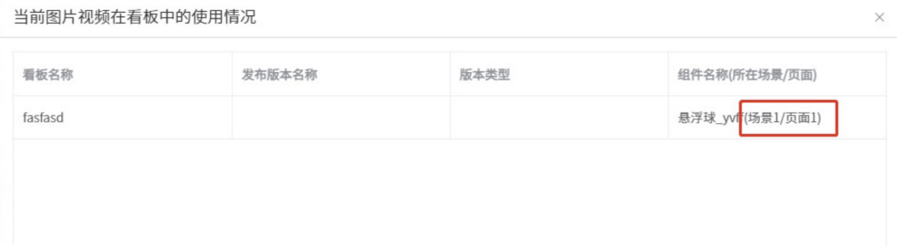

由于近年来大屏越来越复杂，经常作为门户来使用，包含多个不同页面，目前项目组采用多个 iframe 嵌入的方式来实现，但是页面之间的交互变的较为复杂；如果在一个看板内配置全部内容，则组件会超出上限，引起性能问题，为了解决此类大屏的配置问题和性能，V1.2.3.9 版本引入了场景和页面的概念。
如果要配置上图的效果，把有交互的页面加入到同一个场景中；系统名称，单选框组（配成上方按钮样式），右侧温度等公共元素可以配置在一个页面中放在层级最上方，作为母版；切换菜单显示的不同内容，可以分别配在不同的页面中，最后配置单选框组-显示页面事件来实现切换效果。
场景之间相互隔离
场景之间相互隔离，只有在同一个场景下的页面里的组件，才可以配置交互，在配接收事件选组件的时候，要先选页面
场景初始加载
基于性能考虑，初始加载的场景只能有一个
更新
更新之前配好的看板，会自动加入到场景 1 页面 1 中
场景删除
场景删除会把场景下的页面和组件全部删除，无法恢复
页面层级
场景里的页面有层级关系，上面的页面会遮盖下面的页面，所以鼠标无法点击到重叠页面中处于下方的页面；点击页面名称前面的图标拖拽，可以调换页面的层级关系
上图城市综合管理系统里，系统名称，菜单和天气在每个页面都会出现，可以配置在一个页面里，类似于 PPT 的母版，这样就可以不用在每个页面里重复配置了
页面初始加载
和最初页面没有关联的页面可以关闭初始加载，提高性能
页面的初始可见
最初加载不需要显示的页面，可以关闭初始可见，提高性能
看板引入场景和页面
看板里的各个资源统计引入场景和页面
资源引入场景和页面
各个资源的使用情况引入场景和页面

工具栏
层级前置，层级后置，置顶置底、删除、清空按钮都是基于当前页面的；存为模板，导出，预览，保存，发布按钮都是基于整个看板的
快速切换场景和页面
在设计器下方，可以快速切换场景和页面
页面事件
通用标题和单选框组新增显示页面事件，实现点击不同的内容，显示不同的页面功能